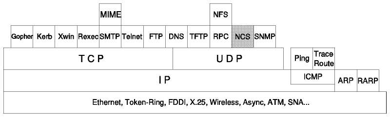
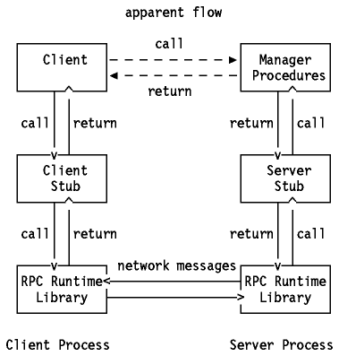
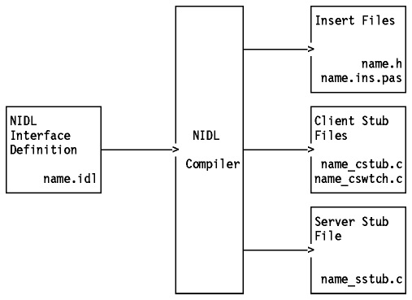

Table of Contents
Table of Contents  DOS
DOS
TCP/IP Tutorial and Technical Overview

Figure: Network Computing System (NCS)
The APOLLO Network Computing System (NCS) is an
implementation of the Network Computing Architecture developed to provide tools
for designing, implementing and supporting applications requiring distributed
data and distributed computing. This is achieved through implementation of NCS
on top of the Remote Procedure Call interface, which is different from Sun RPC.
The Network Computing Architecture is object-oriented.
This allows programs to access objects through interfaces no matter which
machines they communicate with. These types of programs have a simpler design
and are less susceptible to hardware and network changes.
An object is an entity managed by defined operations having a type
specifying the class or category. For example, a disk file is an object and it
can be an ASCII type.
An interface is a set of operations that manipulate the objects.
The Network Computing Architecture uses an expanded concept called
replicated objects which are copies of an object that have the same identifier.
It can be weakly or strongly consistent. Weakly consistent replicated objects
can be accessed even if they are not identical. Strongly consistent replicated
objects can only be accessed when they are identical. The use of one or the
other depends on the performance, availability and consistency required.
Distributed data and processing is achieved through the use of the following
components:
- The Remote Procedure Call (RPC) runtime library
- The Network Interface Definition Language (NIDL) compiler
- The Location Broker
The Network Computing Kernel consists of the
Location Broker and the RPC runtime library, which provides runtime support for
network computing. This kernel and the NIDL compiler support the development
and implementation of distributed applications.
The NCS RPC can use the Domain network communications
protocols (DDS) and the DARPA Internet Protocols (UDP/IP). The selection is
made by the destination address given so that a program can access a Domain and
non-Domain entity.
The Berkeley socket concept is used in NCS RPC. It can listen to more than
one socket identified by a socket address divided into address family (which
defines the structure of the address), network address (host address) and port
number (endpoint address).

Figure: NCS (Components of the Network Computing System)
The client procedure uses standard procedure calling conventions, but it is
remotely executed by the server. The program that makes remote procedure calls
to request operations is called an RPC client. It does not know how an
interface is implemented and may not know the location of the server.
The process that receives the operation request packet from the RPC runtime
library is the RPC server. It is responsible for sending the response with the
results of the operation. A server can export an interface for more than one
object.
The client process has three components: the client procedure that makes
calls, the client stub and the RPC runtime library. The client stub is
responsible for making use of the RPC runtime library to have the client
procedure's calls executed.
The server process has three components: the manager procedures
corresponding to the client application, the server stub corresponding to the
client stub and the RPC runtime library. The server can be called a manager.
When the client requests an operation on a particular object through an RPC
it must indicate the object on which the operation is to be performed and the
server that exports the interface containing the operation. This information is
passed by a handle, created and managed by several calls provided by NCS. The
representation of the server in the handle is called binding. The client may or
may not bind the handle by requesting an RPC with the following states:
- Unbound - no identification (RPC broadcasts to all
hosts on the local network and accepts the first response)
- Bound-to-host - handle contains host identification without a specific
server (an RPC is sent to the host and the Local Location Broker finds the
right port)
- Bound-to-server - handle contains full identification (an RPC is sent to
the specific server port).
The stubs are responsible for making the remote call
as transparent as possible. They mediate between the client and the manager
procedures, converting data for the use of RPC runtime routines.
The RPC runtime library transmits RPC packets containing routines, tables
and data for supporting communication between the client and server stub. There
are three types of calls:
- Client calls used to manipulate the handle and to
send packets.
- Server calls used to create sockets, register interfaces and return object
identification.
- Conversion calls used to determine the socket address for a specific host
and return the host name and socket port number related to a socket address.
The NIDL is a development language that completely
defines the interface and each RPC's parameters. Two syntaxes can be used, one
more comfortable for C programmers and the other for Pascal programmers.
The NIDL compiler translates the NIDL commands into executable stubs that
will be linked with clients and servers. These stubs will be generated in C
source code but are fully compatible with Pascal programs.

Figure: NIDL Compiler - Generated files.
The NIDL Compiler generates two client stub files: name_cstub.c and
name_cswtch.c. The second one is a switch file used to create replicated
servers to provide access to a replicated object and ensure consistency. The
client calls are sent to the client switch that contains the public procedures,
leaving the client stub only with the private procedures.
The stub generated can have two major responsibilities:
- Copying and converting data - The simplest stubs have only this procedure
of argument passing and data conversion. All stubs marshal and unmarshal values
into and from the RPC packet. The client stub marshals the input parameters to
send the packet to the server and unmarshals the output parameters from the
reply packet. The server stub unmarshals the input parameters from the RPC
packet sent from the client and sends them to the interface manager and
marshals the output parameters to send them to the client. In addition each
stub checks the data representation format indicated in the transmitted packet.
Every system sends data in its native format and the stubs convert them to the
receiver's representation. It's important to note that no stub sends data in a
standard format so, if both systems use the same data representation, there is
no need to convert data.
- Binding with a remote interface - NIDL manages the object and binding
information in the following ways:
- Explicit handle - the client explicitly passes the handle parameter in each
operation which is passed to the server's manager routines
- Implicit handle - the handle is a single global variable making the RPC
look more like an ordinary procedure call but restricting it to a one-server
system
- Manual binding - the client makes all calls that create and manage the
handle
- Automatic binding - the client calls an auto-binding routine for each RPC
and an auto-unbinding routine after the response, thus trading performance for
convenience.
The Location Broker is used by the client to request
information about objects and interfaces. This information is registered in the
Location Broker by the servers.
The Location Broker is composed of three components:
- Local Location Broker (LLB) - maintains information
about objects and interfaces on the local host and provides it to remote or
local application programs. It also provides the client with the LLB's
forwarding facility, which eliminates the need for a client to know the
specific port that a server uses.
- Global Location Broker (GLB) - maintains information
about objects and interfaces throughout the network.
- Location Broker Client Agent - is a set of routines
called by application programs to access LLB and GLB databases. The client may
know the host on which the object is located and can directly interrogate the
remote host's LLB; otherwise it would take the GLB route.
The GLB may have several replicas running to ensure the availability of the
information. To ensure the consistency of the replicas' data all
the manipulation is done by the Data Replication Manager
(DRM), which propagates any change in the database. The DRM uses a replica list
containing the location of every replica. Clients are allowed to do lockups and
updates even in the propagation procedures, which gives weak consistency but
high availability.
The Location Broker database has the following fields:
- Object UUID - object identifier
- Type UUID - type of the object identifier
- Interface UUID - interface of the object identifier
- Flags - indication of a global object
- Annotation - user defined
- Socket address length - socket address field length
- Socket address - location of the server
Here are some definitions:
- UUID stands for Universal Unique
IDentifier, that is, a 128-bit value used for identification. No other
object, type, or interface can use a UUID that is already assigned.
- Object: an entity that is manipulated by well-known operations. Disk
files and printers are examples of objects. Objects are accessed through
interfaces. Every object has a type.
- Type: a class of object. All objects of a specific type can be
accessed through the same interface or interfaces.
- Interface: a set of operations. The Network Computing Architecture
specifies a Network Interface Definition Language (NIDL) for defining
interfaces.
- NIDL: a declarative language for the definitions of interfaces.
- NIDL Compiler: an NCS tool that converts an interface definition,
written in NIDL, into several program modules, including source code for client
and server stub.
The following list indicates the parts and versions of
NCS that were ported to VM:
- NIDL Compiler 1.0
- Network Computing Kernel (NCK) 1.1
The IBM VM implementation of NCS differs from the Apollo Computer, Inc.
implementation of NCS:
- The IBM VM implementation of NCS contains support for the Non-Replicated
Global Location Broker Daemon (NRGLBD).
- It does not contain support for the Global Location Broker Daemon (GLBD).
- It does not contain support for the Data Replication Manager Administrative
Tool (DRM_ADMIN).
- It does not support multitasking, forking, spanning a task, or Apollo's
Concurrent Program Support (CPS).
- It only supports the Internet Protocol (IP).
- It fixed several EBCDIC-to-ASCII translation table errors as well as the
IBM floating point and IEEE floating point translation errors which were
present in the NCS V1.0.
- The NCS regular enum data type requires fullword (4 bytes) enumeration
usage in the IBM C/370 Compiler.
The VM implementation of NCS consists of three virtual machines:
- NCS virtual machine, which has two minidisks:
- 191 minidisk: the files stored there should be accessible to anyone who
wants to run NCS. This disk is a repository for the NCS executables, NCS IDL
and header files, LIBNCK (RPC runtime library), sample programs.
- 195 minidisk: These files should be accessible only to qualified users who
are acting as NCS database or network administrators. The NCS 195 disk contains
the NCS executable LB_ADMIN. The LB_ADMIN function allows the user to add,
delete, or update any record in the NCS Global Location Broker or Local
Location Broker databases.
- NCSGLBD virtual machine, where the NCS Non-Replicated Global Location
Broker daemon is run. It controls the Global Location Broker database, that is,
it helps clients to locate servers on the network or internet. The NRGLBD
should be running on this host only if neither GLBD or NRGLBD is running
anywhere else in your network.
- NCSLLBD virtual machine, where the NCS Local Location Broker daemon (LLBD)
is run. It manages the LLB database where information about local NCS-based
servers are stored. The LLBD must be run on each host where NCS-based programs
are run.
The same parts and versions of NCS were ported to MVS as in VM. Please refer
to VM.
The MVS implementation of NCS consists of two servers:
- NCSGLBD server, where the NCS Non-Replicated Global Location Broker daemon
is run. It controls the Global Location Broker database. It also helps clients
to locate servers on the network. The NRGLLD should be running on this host
only if neither GLBD or NRGLBD is running anywhere else in your network.
- NCSLLBD server: where the NCS Local Location Broker daemon (LLBD) is run.
It manages the LLB database where information about local NCS-based servers are
stored. The LLBD must be run on each host where NCS-based programs are run.
The runnidl, runcpp, uuid@gen and lb@admin commands are available. Please
refer to IBM TCP/IP Version 3 Release 1 for MVS: User's Guide and IBM
TCP/IP Version 3 Release 1 for MVS: Programmer's Reference for details.
NCS is not implemented in TCP/IP on the OS/400 system.
NCS for IBM AIX/ESA is a port of Hewlett-Packard/Apollo's NCS Version
1.5.1 to the IBM AIX/ESA. For details, please refer to Network Computing
System for AIX/ESA Planning and Administration.
NCS with the Network Computing Kernel, runtime services and the NIDL
compiler are supported in both AIX Versions.
The implementation includes the Local Location Broker (llbd daemon)
and the Non-replicated Global Location Broker (nrglbd daemon). Both
daemons are controlled by the SRC (System Resource Controller) and can be
started by uncommenting the #startsrc -s llbd and #startsrc -s
nrglbd lines in the /etc/rc.ncs file. For more details, please refer
to AIX Version 3.2 for RISC System/6000 Communication Concepts and
Procedures and AIX Version 3.2 for RISC System/6000 General Programming
Concepts.
The lb_admin, nidl and uuid_gen commands are available.
Please see the online InfoExplorer facility for details.
NCS is not implemented in TCP/IP for OS/2.
NCS is not implemented in TCP/IP for DOS.
Table of Contents  Network
File System (NFS)
Network
File System (NFS)